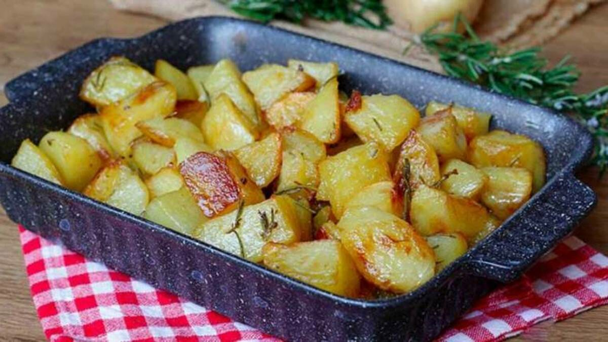

Patates au four

Description
Ces délicieuses patates au four sont très simples à faire. Cette recette est adaptée pour deux personnes. N'hésitez pas à essayer différent assaisonnements !
Ingrédients
- 3 pommes de terre
- 2 carottes
- Huile d'olive
- Sel & poivre
- Herbes ou épices de votre choix (j'utilise du Ras el-Hanout)
Etapes de la recette
- Préchauffez votre four à environ 200°C
- Epluchez et coupez vos pommes de terre en morceaux (petits de préférence)
- Faites de même avec les carottes
- Mettez les dans le plat et ajoutez de l'huile d'olive (à peu près 3 cuillères à soupe)
- Ajoutez le sel, le poivre et l'assaisonnement que vous avez choisi
- Mélangez le tout de manière homogène
- Mettez le plat au four pendant environ 50 minutes
- Et c'est tout ! Bonne appétit !
Retour au menu